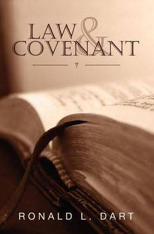

The Law & Covenant is a book written by Ronald L. Dart and Published by Wasteland Press in 2006. Click here to listen to The Thread. Click here to listen to Revelation. Chapters of Law & Covenant: The Blurb (A.K.A. - The back cover) (MP3) January 2024 (2 min) Chapter 0 - Prologue (MP3) January 2024 (8 min) Chapter 1 - Jigsaw Puzzle (MP3) January 2024 (31 min) Chapter 2 - The Purpose of Law (MP3) January 2024 (16 min) Chapter 3 - Law and Meaning (MP3) January 2024 (26 min) Chapter 4 - Understanding Law (MP3) January 2024 (36 min) Chapter 5 - Jigsaw Puzzle (MP3) January 2024 (33 min) Chapter 6 - The Purpose of Law (MP3) January 2024 (21 min) Chapter 7 - Law and Meaning (MP3) January 2024 (20 min) Chapter 8 - Divorce Law (MP3) January 2024 (22 min) Chapter 9 - The Avenger (MP3) January 2024 (23 min) Chapter 10 - Immigration Law (MP3) January 2024 (26 min) Chapter 11 - ***DISCLAIMER*** (MP3) January 2024 (30 secs) Chapter 11 - The Pagan Feminine (MP3) January 2024 (19 min) Chapter 12 - The Problem with Sin (MP3) January 2024 (26 min) Chapter 13 - The Meaning of Grace (MP3) January 2024 (30 min) Chapter 14 - On Being Perfect (MP3) January 2024 (22 min) Chapter 15 - Covenant, First Steps (MP3) January 2024 (25 min) Chapter 16 - The Oldest Convenant (MP3) January 2024 (21 min) Chapter 17 - The Social Contract (MP3) January 2024 (18 min) Chapter 18 - Covenant and Government (MP3) January 2024 (13 min) Chapter 19 - Israel and the Covenants (MP3) January 2024 (34 min) Chapter 20 - The Newest Covenant (MP3) January 2024 (33 min) Chapter 21 - Epilogue (MP3) January 2024 (6 min) 